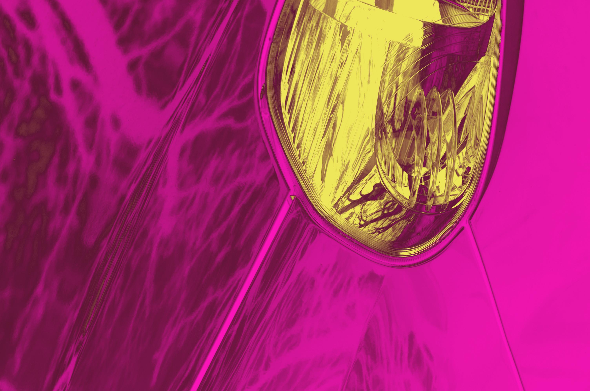
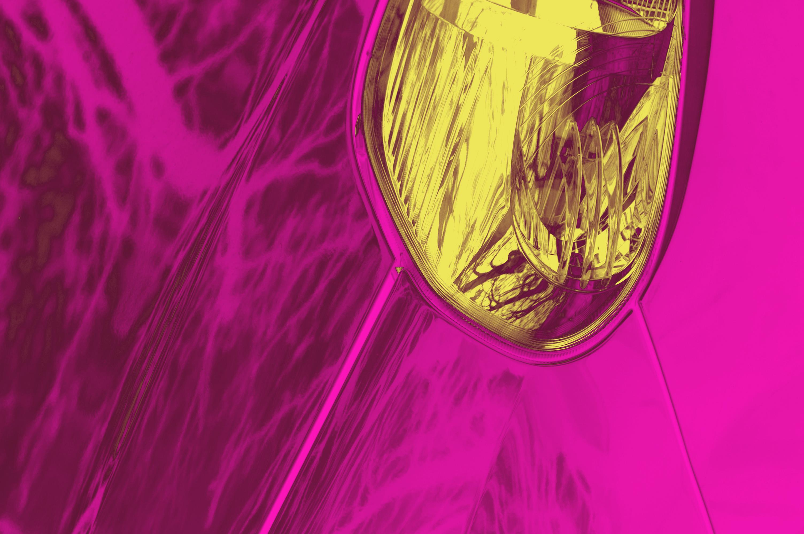

About this series
Like many other photographers, I have a deep love for analogue photography. Shooting a roll of film is an entirely different experience from the digital approach. To me, the fascinating thing about film is the process and journey that happen before you're able to see what you've captured. In the digital world, this excitement and novelty are taken away by screens and live previews.
What if there were a way to capture that same excitement and surprise while maintaining the mathematical precision that only a CMOS sensor can provide? Through my experience as a software developer, I've created my own small programs that edit my pictures by applying filters or other algorithms, introducing an element of randomness decided by the computer. Just like when a piece of film is bathed in acids and slight changes in the temperature of these liquids can affect the final result, I wanted to replicate the same thing: giving up some control over the final look of my photos and handing it over to a machine.


 
